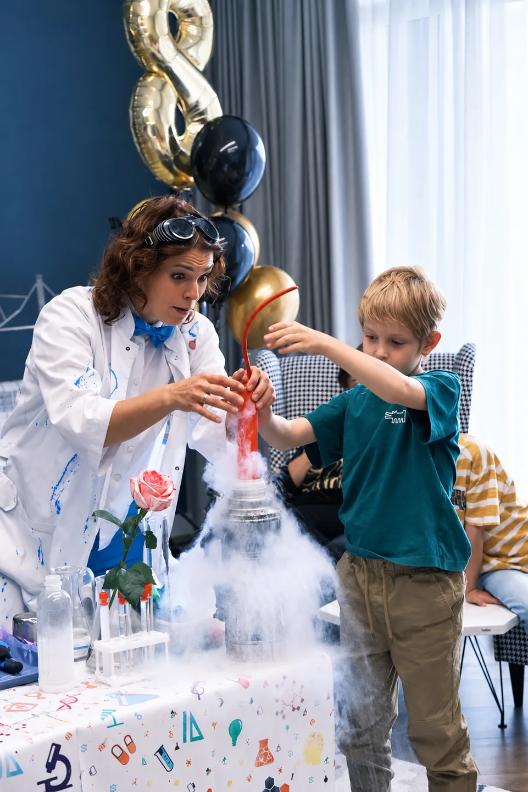
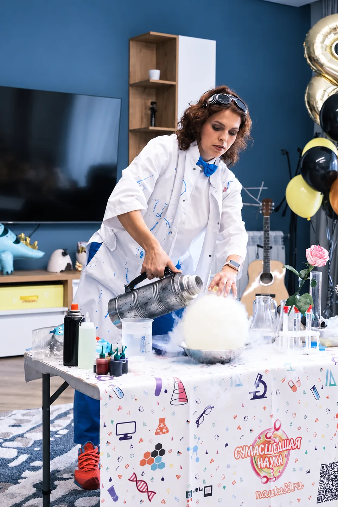
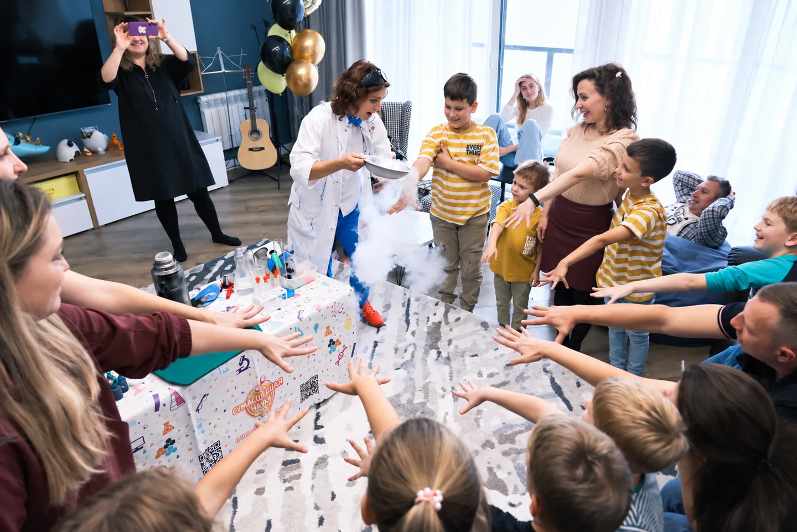
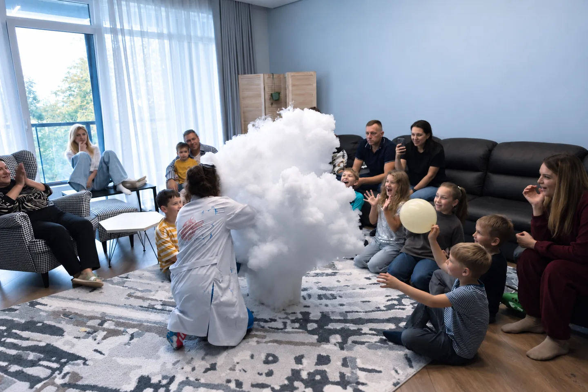
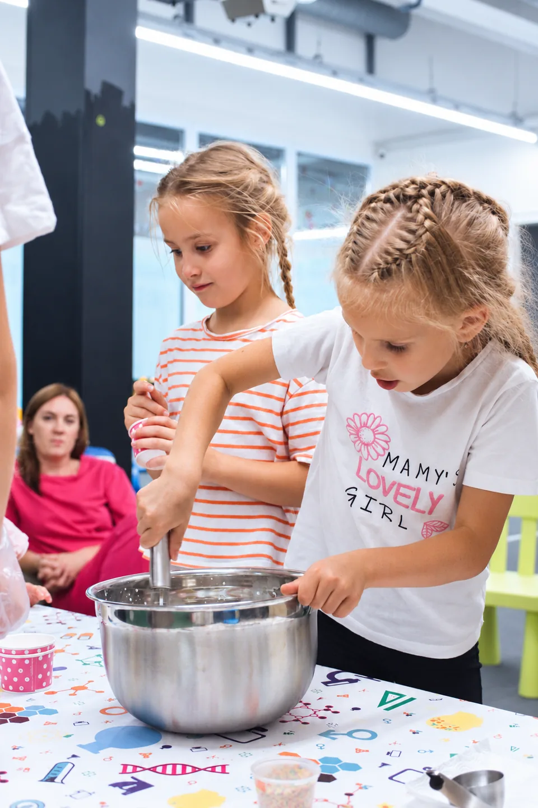
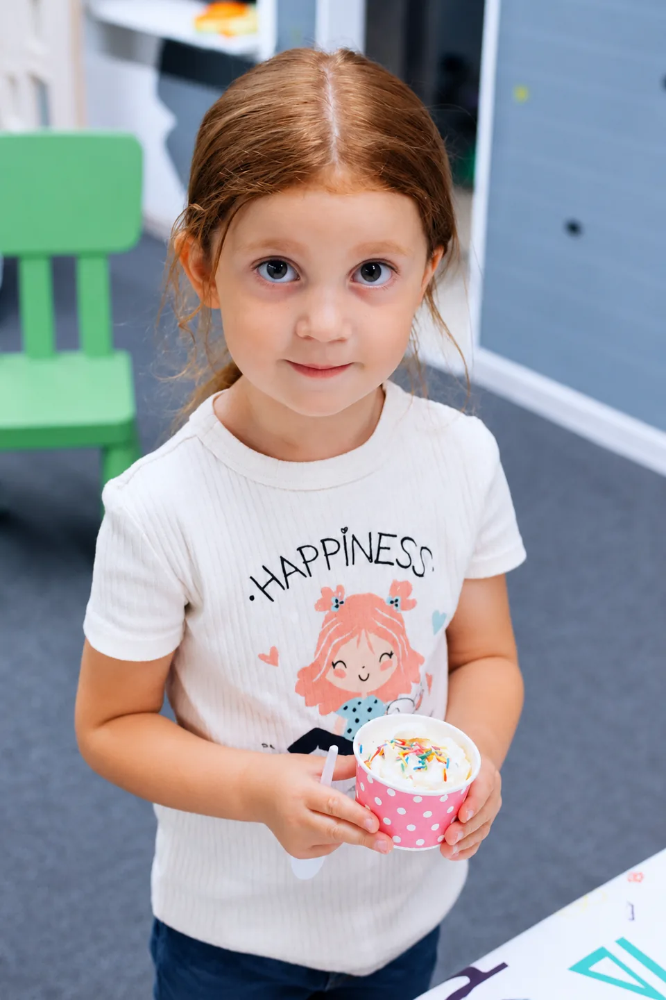

Гости участвуют
Профессор вовлекает участников в задания и демонстрации. Для дня рождения — особая роль именинника; для выпускного — награждение класса.
 Подобрать праздник
Подобрать праздник
Калининград и область · научные приключения
Интерактивные научные шоу для дней рождения, выпускных, школ, лагерей и других событий
Гости не просто смотрят — они участвуют в удивительных открытиях!

01 / Больше, чем наблюдать
Для дней рождения, выпускных и других событий. Эксперименты, которые можно увидеть вблизи и обсудить с профессором.
Профессор вовлекает участников в задания и демонстрации. Для дня рождения — особая роль именинника; для выпускного — награждение класса.
Профессор объясняет научные явления простым языком — за необычными превращениями открываются законы физики и химии
Криоэффекты, сухой лёд и тематические сценарии. Наполнение зависит от выбранного научного шоу.
Действующая программа для детей от 5 лет
Необычное приветствие и команда юных учёных
Удивительные свойства привычного и необычного
Зрелищные демонстрации под контролем ведущего
Эффектный финал и поздравление участников
Площадку и условия демонстраций согласуем заранее
Демонстрации со специальными требованиями проводит подготовленный ведущий
02 / Наука в настоящем кадре
Профессор, гости и научные открытия — фотографии проведённых мероприятий



Нажмите на фотографию, чтобы открыть её целиком
03 / Лаборатория впечатлений
Выбирайте формат под вашу компанию — от одного яркого шоу до целого научного приключения! Цены для Калининграда, выезд за город согласуем отдельно
Эксперименты, участие гостей и праздничное награждение
от 9 500 ₽
В зависимости от выбранной программы
Туман, "научная каша" и необычные свойства сухого льда — интерактивное путешествие для самых маленьких исследователей
От научных экспериментов до серебряной дискотеки
от 29 900 ₽
До 10 детей · научное шоу и мороженое
29 900 ₽ — до 10 детей, мороженое включено. За каждые следующие 5 детей — +500 ₽ за мороженое. Лизуны оплачиваются отдельно, время дополнительного мастер-класса согласуем. Реквизит «БУМ-ТОРТА» готовится; настоящий торт предоставляют родители
Подобрать «Переполох»Только для секретных агентов
Содержание операции строго засекречено
59 900 ₽
Предварительный ценовой ориентир
Операция готовится · запись пока закрыта
К отдельному шоу можно добавить оба мастер-класса! Калькулятор прибавит их стоимость к цене программы, общую продолжительность согласуем отдельно
Свыше 150 детей и для нестандартных сценариев подготовим индивидуальный расчёт. Выезд за пределы Калининграда согласуем отдельно
Добавьте мастер-класс по крио-мороженому, изготовлению лизунов или обе программы сразу
На фотографиях — приготовление и дегустация мороженого. В «Научном переполохе» оно включено, лизуны можно добавить отдельно
Подобрать «Научный переполох»

04 / После научных открытий
Родители и организаторы делятся тем, что запомнилось после наших научных приключений
Ирина пригласила шоу на два мероприятия, каждое — примерно для 40 детей. Особенно отметила энергичность ведущей и увлекательные эксперименты.
После знакомства с программой на дне рождения клуб пригласил шоу ещё на два выступления. Организаторы оценили юмор и внимание к гостям.
Елена поблагодарила команду за выступление на пятилетии сына. Ей понравились яркие впечатления и умение ведущего общаться с детьми.
Подробные пересказы реальных отзывов · без дословного цитирования
05 / Важные детали
Возраст зависит от программы: «Открытия с сухим льдом» — от 4 лет, «Большое Криошоу» — от 5, «Сумасшедшая наука» — от 9. Подбираем программу под возраст и площадку.
Да. Проводим научные шоу не только для дней рождения, но и для выпускных и других мероприятий. Формат поздравления и награждения адаптируем.
60 минут научного шоу, 20 минут мастер-класса, награждение, фирменный «БУМ-ТОРТ», 30 минут серебряной дискотеки и три перерыва по 10 минут. Всего 150 минут. Номер «БУМ-ТОРТ» пока готовится.
Для дня рождения настоящий праздничный торт предоставляют родители. Мы организуем его появление после фирменного сценического номера «БУМ-ТОРТ».
В «Научном переполохе» за 29 900 ₽ до 10 детей уже включены научное шоу и крио-мороженое. За каждые следующие 5 детей — +500 ₽ за мороженое. Лизуны: 1 500 ₽ до 10 детей, далее +500 ₽ за каждые 5 детей. Свыше 150 участников — индивидуальный расчёт.
Пока нет. Это премиальный формат в разработке. 59 900 ₽ — выбранный предварительный ориентир; окончательные условия и сценарий ещё не утверждены.
Сообщите адрес, возраст и количество участников, особенности помещения. Условия проведения научных демонстраций, музыки и дискотеки согласуем заранее.
06 / Подберите программу
Соберите праздник под себя: выберите любимые научные эксперименты, добавьте мороженое, лизуны или оба мастер-класса и получите план для обсуждения
Подбор без обязательствСохраните план, чтобы обсудить детали с организатором. Дата не бронируется автоматически
Ваш вариант праздника
Выбирайте программу и знакомьтесь с её особенностями
Дополнительные мастер-классы мороженое включено в пакет
Крио-мороженое включено в программу
К отдельному шоу можно добавить один или оба мастер-класса; в «Переполохе» мороженое уже включено
Заявка отправится только после того, как вы заполните и отправите форму ниже. Подбор не передаётся автоматически
07 / Заявка на праздник
Укажите имя, телефон и удобную дату — мы свяжемся с вами и обсудим праздник. Без лишних вопросов и автоматической брони.
Удобная короткая форма · без обязательств